Right-sizing STAC
Pete Gadomski
2025-04-30
Three bears image: John D. Batten, Public domain, via Wikimedia Commons
{kind=link}
What the STAC?
STAC is the map to your data.
— Howard Butler
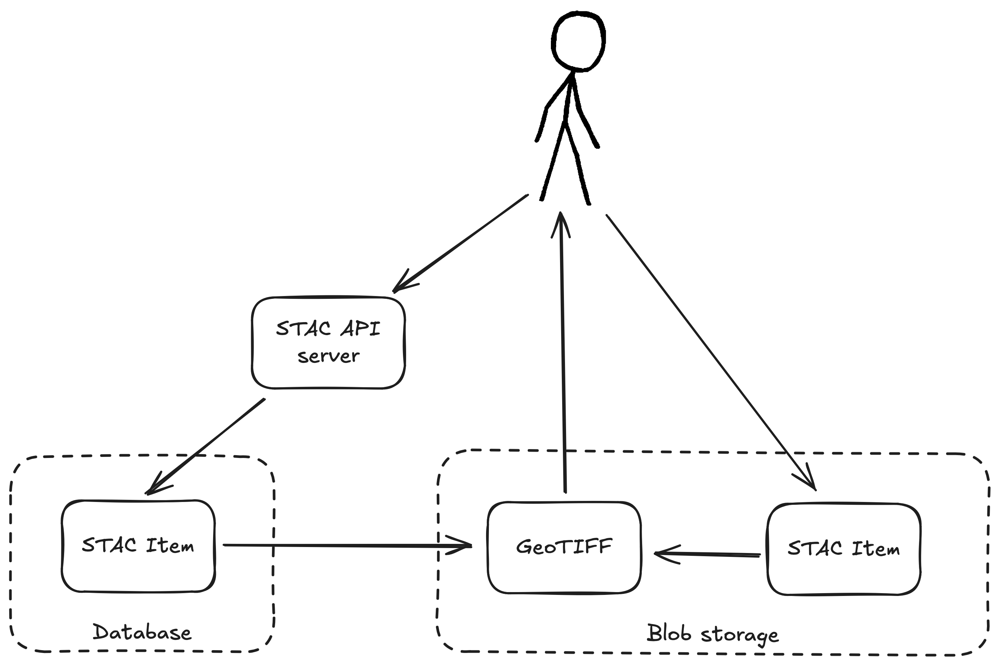
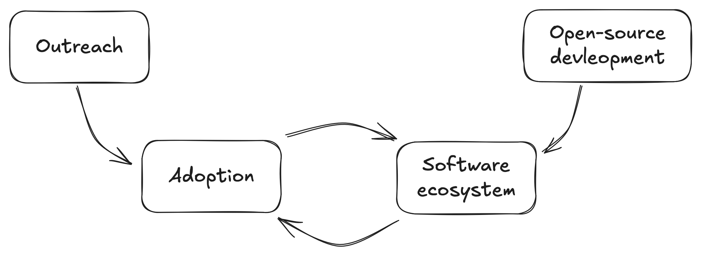
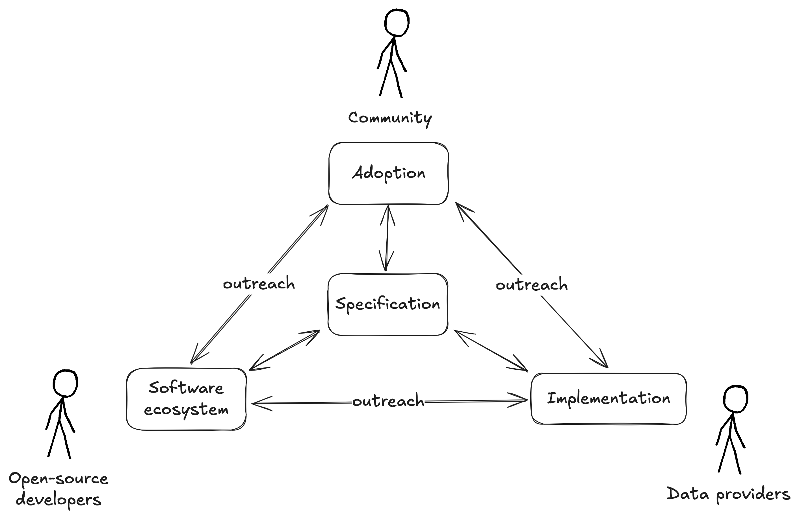
STAC in action
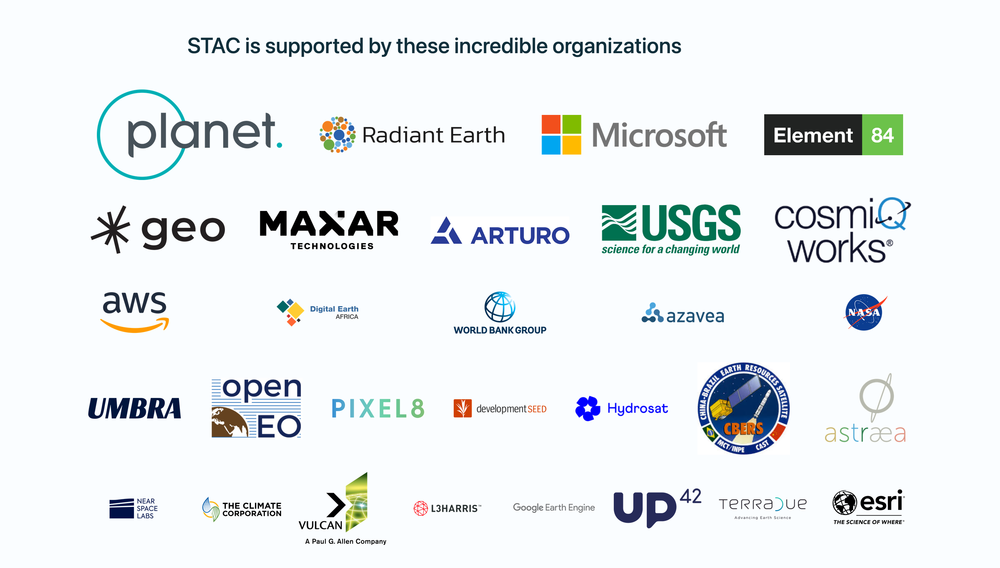
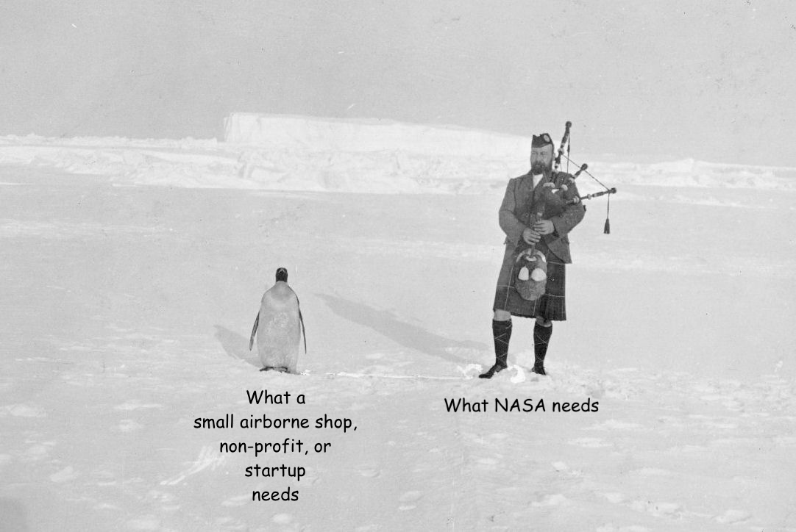
Annotated version created from William S Bruce 1867-1921, Public domain, via Wikimedia Commons
{kind=link}
Cloud-Native Geospatial metadata
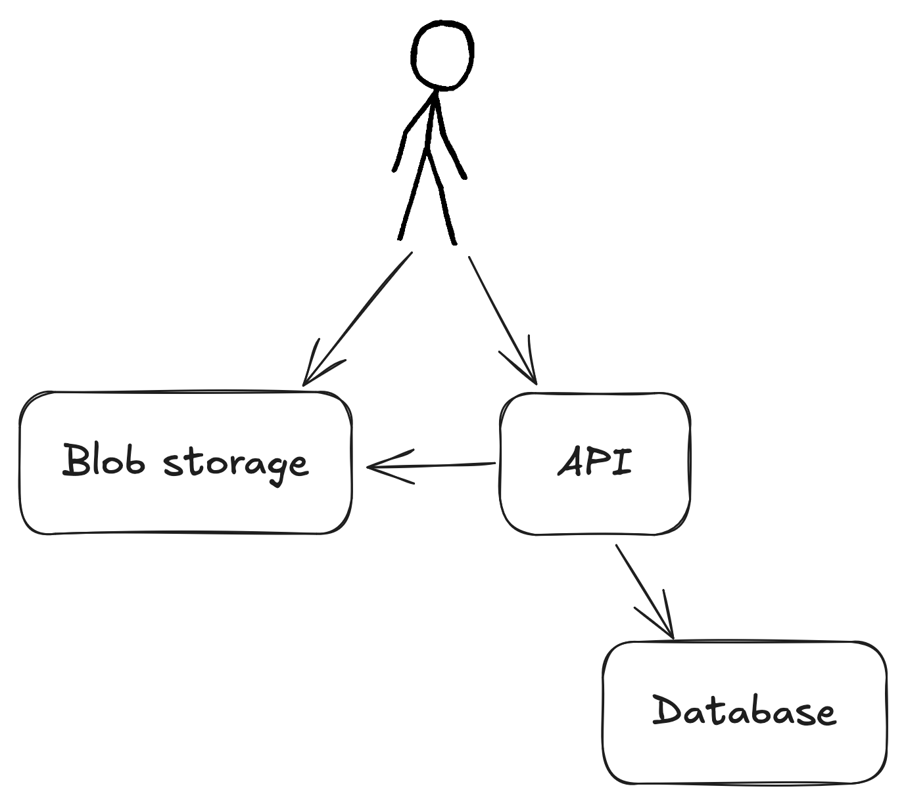
GeoParquet
Geospatial data in

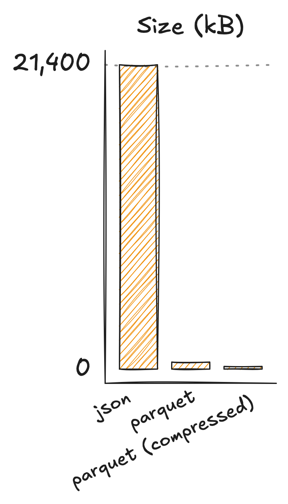
| Format | Size |
|---|---|
| json | 21 MB |
| json.gz | 614 kB |
| parquet | 488 kB |
| parquet (compressed) | 179 kB |
1000 sentinel-2 items
DuckDB
🦆
D select count(*) from read_parquet('s3://stac-fastapi-geoparquet-labs-375/sentinel-2-l2a.parquet/*.parquet');
┌────────────────┐
│ count_star() │
│ int64 │
├────────────────┤
│ 2195487 │
│ (2.20 million) │
└────────────────┘
Run Time (s): real 1.971 user 0.467172 sys 0.545317Experiments
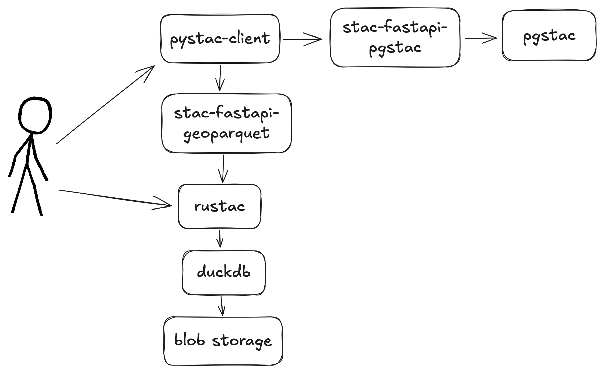
Datasets
| ID | Number of items | Size | Spatial properties |
|---|---|---|---|
| naip | 10,000 | 1.8M | Colorado, dense |
| sentinel-2-l2a | 2,200,000 (roughly) | 2.4G | Global, dense |
| openaerialmap | 13,500* | 12M | Global, sparse |
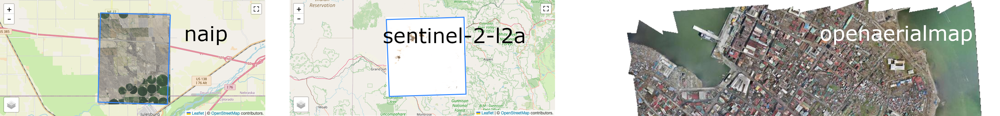
*There's actually ~17k items in the OpenAerialMap catalog.
Are larger pages faster?
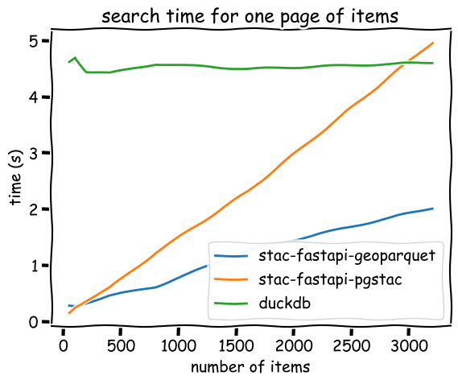
Only fetching some fields
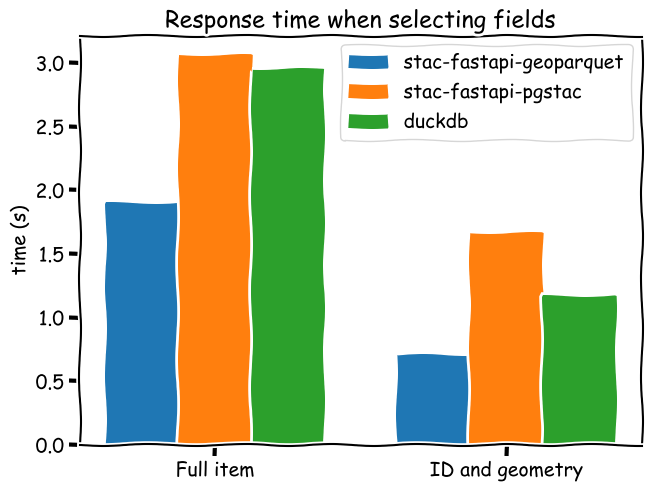
Searching by attributes
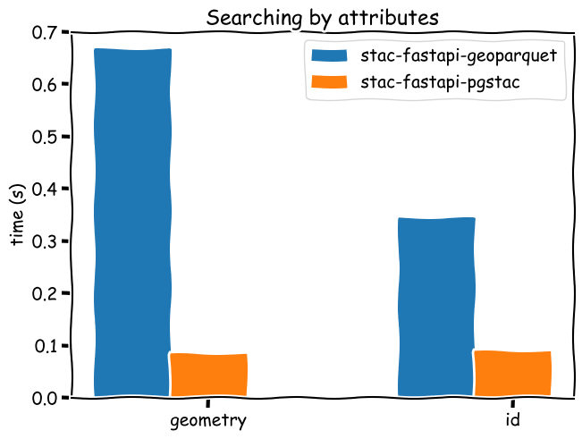
Searching by attributes on 2.2 million
$ curl https://stac-geoparquet.labs.eoapi.dev/collections/sentinel-2-l2a/items/S2A_MSIL2A_20240101T104521_R065_T30KTG_20240101T142405
{"message":"Service Unavailable"}💥
Where's the breakpoint?
Costs
During the one week while we ran experiments
| Service | Cost | Notes |
|---|---|---|
| Relational Database Service | $2.42 | db.t3.micro, pgstac only |
| EC2-Instances | $1.33 | pgstac only |
| Lambda | $0.09 | Shared between pgstac and geoparquet |
| S3 | $0.01 | geoparquet only |
Open questions
When is
stac-fastapi-geoparquet
the wrong answer?
- Lots of items (what is the breakpoint?)
- Low latency needle-in-haystack
- You already have a database
Should we scale?
We could engineer solutions to raise that "max number of items" ceiling, but at what point are we re-creating a database system?
Appends?
🥾 🥫
$ rustac translate data/openaerialmap.parquet | jq '.features | length'
13500
$ time rustac translate data/openaerialmap.parquet out.parquet
rustac translate data/openaerialmap.parquet out.parquet 0.68s user 0.09s system 97% cpu 0.793 totalSpecifications?
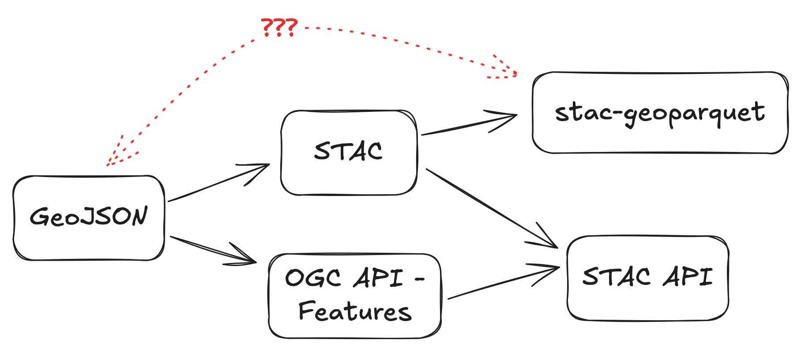
Software
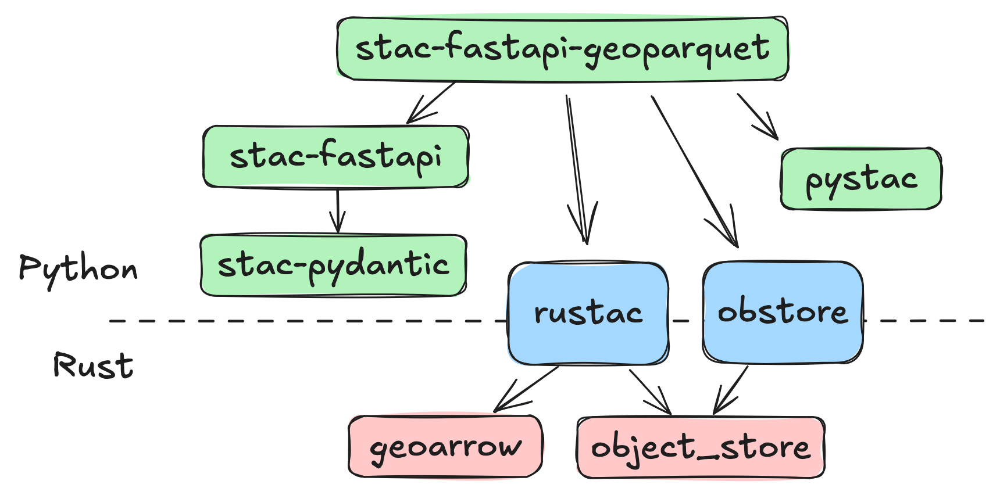
rustac
née stac-rs/stacrs

🫡 Jarrett Keifer, Mike Parks, and Rob Gomez of Element 84 for the logo.
Looking forward

- stac-geoparquet spec release
- Consolidate stac-geoparquet tooling
- Actually Use™ stac-fastapi-geoparquet for a real-world problem
- rustac API iterations and improvements
Fin
Thank you for your time (slides, labs repo)
Thank you to Zac Deziel, Kyle Barron, David Bitner, Henry Rodman, Chris Holden, Vincent Sarago, Anthony Lukach, and many others for the help on the lab, and to Development Seed for setting aside company time for experiments like these.
Three bears image: John D. Batten, Public domain, via Wikimedia Commons